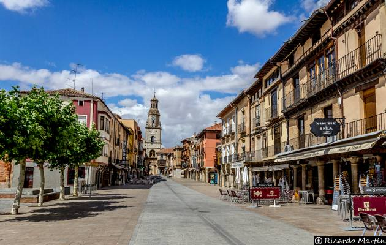
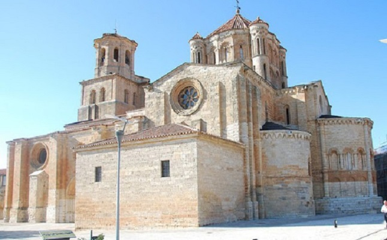

Datos |
Informacion |
|---|---|
Localizazion |
|
Geografia |
|
Historia |
|
Edad antigua |
|
Edad media |
|
Historia moderna |
|
Historia contemporanea |
|
Naturaleza |
|
Tradiciones |
|
Otros datos |
|
Pagina principal |
|
|
LocalizacionSu geografiaEl término municipal de Toro se localiza en el cuadrante noroeste de la península ibérica y al oeste de la meseta Norte, en el centro de una de las zonas con mayor presencia de núcleos urbanos de toda Castilla y León. En sus 10 559 km² de superficie se produce la transición entre las llanuras cerealistas de Tierra de Campos y el relieve montuoso de las comarcas más occidentales, que culmina en las cumbres de más de 2000 metros de la sierra de Sanabria. Por su parte, la ciudad de Toro se sitúa al este de la provincia de Zamora, a 32 km de la capital provincial, 36 km de Tordesillas, 62 km de Valladolid, 63 km de Medina del Campo, 72 km de Salamanca y 76 km de Benavente. Es una de las localidades ribereñas del río Duero, cuyo cauce atraviesa el término en sentido este-oeste. La ciudad se sitúa en un cerro elevado de unos 100 metros de altura sobre la vega del Duero y a menos de 400 metros de distancia de la margen derecha del río, con lo que su límite sur es una ladera que cuenta con una pendiente media del 25%, a la que los toresanos llaman «La Barranquera». Su término municipal linda con los municipios de Matilla la Seca, Pozoantiguo, Villardondiego y Villavendimio, por el norte; Fresno de la Ribera, Villalazán, Madridanos y Sanzoles, por el oeste; Venialbo, El Pego, Villanueva del Puente y Castronuño, por el sur; y Villafranca de Duero, San Román de Hornija y Morales de Toro, por el este, casi todos pertenecientes a la provincia de Zamora. Además, su término incluye los enclaves de Peleagonzalo y Valdefinjas, ambos al suroeste, en la orilla sur del Duero. HidrografíaEl río Duero es el principal protagonista de la red hidrográfica del municipio, atravesándolo de este a oeste. Además cuenta con una importante red de afluentes entre los que destaca los ríos Bajoz y Guareña, junto con otros cauces secundarios como son la reguera de Villaveza, el arroyo de Adalia, el arroyo Reguera, el regato de Valdelapega, el arroyo la Tuda y el regato de la Gavia. Toda la red es de régimen pluvial, siendo por tanto su nota característica la irregularidad de su caudal, con periodo de aguas altas de enero a abril, siendo marzo el mes que aporta cifras máximas. En el tramo medio del arroyo Reguera se encuentra la laguna de Castrillo, zona húmeda catalogada que cuenta con una extensión aproximada de 4 ha. ClimaToro cuenta con un clima mediterráneo continentalizado con cierta influencia del Atlántico. Los inviernos son largos y fríos (hasta –11 °C), mientras que sus veranos son cortos y calurosos (hasta 37 °C). La temperatura media anual se sitúa entre los 12 y los 13 °C (desde -11 a 37 °C) y tiene una pluviosidad escasa, con una media de en torno a los 350-400 mm anuales. Uno de sus rasgos más característicos es la gran diferencia térmica entre los días y las noches. Además, no es habitual la presencia de nieve, pero si que las heladas se extiendan a la primavera. HistoriaEdad AntiguaEl denominado verraco es un toro de granito que fue hallado en la ciudad y que para muchos es el origen de su actual nombre. Algunos historiadores lo esgrimen para justificar que Toro fue el primitivo asentamiento vacceo de «Arbocala». Existen diversas teorías sobre el primigenio asentamiento humano en el actual solar de la ciudad de Toro. De ellas la más aceptada se basa en el conjunto de piezas o vestigios arqueológicos de origen celtíbero que, según señala Navarro Talegón en su «Catálogo monumental de Toro y su alfoz», «patentizan la existencia de un castro que posiblemente se corresponda con la antigua ciudad vaccea citada por el geógrafo y astrónomo griego Ptolomeo» y que otro historiador mucho más reciente, Gómez-Moreno, «hizo coincidir» con la Arbocela del «Itinerario de Antonino» -recopilación de rutas del Imperio Romano-, situada en la calzada de Mérida a Astorga y Zaragoza, en el ramal de esta última que parte de Ocelu Duri. Una población que, según Navarro Talegón, cabe identificar con la «Arbocala», cuya conquista por Aníbal es mencionada por Tito Livio en sus «Décadas». De esa época sería uno de los principales símbolos actuales de la ciudad, el denominado verraco, un toro de granito que fue hallado en la ciudad por los repobladores cristianos en tiempos del Alfonso III de Asturias y que para muchos dio su actual nombre a la ciudad. Más incierta es la presencia romana en la ciudad. El testimonio más evidente de esta época es el puente mayor sobre el río Duero, aunque su reconstrucción —casi por completo— de finales del siglo XII o principios del XIII han dejado muy pocos sillares almohadillados de fábrica romana. Los restos arqueológicos más abundantes fueron localizados en Tagarabuena, pedanía situada a un kilómetro de Toro. Las escasas huellas romanas, visigodas y musulmanas han llevado a que algunos historiadores defiendan que el primer asentamiento vacceo desapareció tras la conquista de Aníbal y que de existir alguna población, sería insignificante. Edad MediaCuadro de García I de León. En el 899, cuando todavía era infante, se encargó de la repoblación de Toro con gentes de diversos orígenes, principalmente grupos de mozárabes provenientes del sur. De esta época es el primer recinto amurallado y el alcázar. La "Rejadorada", situada en el palacio del mismo nombre. En 1476, los toresanos partidarios de Isabel la Católica acordaron sublevarse contra los portugueses que ocupaban la ciudad. El gobernador Juan de Ulloa, valedor de la princesa Doña Juana (llamada por sus adversarios «la Beltraneja») , envió a la horca a todos los conjurados, pero ordenó dar garrote vil a Antonia García, esposa de Juan de Monroy, en la reja de su misma casa. Isabel la Católica, tras su entrada en Toro, mandó dorar esa reja en desagravio. Leovigildo, rey de los visigodos, organizó en 573 una campaña contra los suevos, en la que estos últimos fueron derrotados en sucesivas ocasiones. El resultado final fue la sumisión del rey Miro a la supremacía visigoda, convirtiéndose en un federado de su corona. Además algunos autores indican que el rey visigodo también fundó «Villa Gothorum», la actual ciudad de Toro, a fin de usarla como baluarte contra los suevos y como lanzadera de la ocupación de lo que se denominó «Campi Gothorum» (Tierra de Campos). Sin embargo, otros autores defienden que dicha refundación no tuvo lugar y que la actual ciudad de Toro no fue ocupada en el período que va desde el abandono del primitivo castro celtíbero hasta su refundación en la época de la repoblación de finales del siglo IX, por lo que seguramente formó parte del denominado Desierto del Duero, que fue repoblado como bastión leonés. El año 899 es conocido en la historia de Toro como el de la repoblación de la ciudad. Así lo atestiguó el cronista del rey Alfonso III de Asturias, el obispo Sampiro. La refundación, ya con el nombre de Toro, se realizó de la mano del infante don García con gentes de procedencia diversa, entre los que destacan grupos de mozárabes provenientes del sur —tal y como evidencian ciertas advocaciones de algunas parroquias y algunos fustes y capiteles de mármol— e incluso por mudéjares que en su mayor parte fueron mano de obra en la edificación de las diversas fortificaciones. Junto a ellos participaron gentes del norte, principalmente asturianos, vascones y navarros. A esta época pertenece la estructura primigenia de la ciudad y algunos de sus elementos patrimoniales más significativos, como son el primer recinto amurallado y el alcázar. La ciudad se concibió con las típicas características de las villas de repoblación de la época, potenciadas por su clara posición estratégica y defensiva entre los reinos cristiano y musulmán. Dicha posición estratégica le facilitó que adquiriera de forma rápida una notable relevancia, y con ello un importante desarrollo urbano. La repoblación de Toro resultó imprescindible para la consolidación cristiana al norte del Duero. Como consecuencia, durante el siglo X recibió diferentes ataques de los gobernantes de Al-Ándalus. Sin embargo, las fuentes cristianas e islámicas silencian el nombre de Toro en relación a estas aceifas. Hacia 974, ya en el reinado de Ramiro III de León, Toro era considerada como cabecera de su comarca, el «Campo de Tauro». La desintegración del califato cordobés produjo un periodo de estabilidad a comienzos del siglo XI. Esta situación fue aprovechada por Fernando I de León (1016-1065) para reorganizar la ciudad de Toro y por nuevos pobladores —provenientes del norte— que se asentaron en la ciudad, aunque de esta información tampoco hay datos precisos. Este monarca legó el señorío de Toro a su hija Elvira, pero su hermano, y primogénito, Sancho, no tardó en incorporar dicho señorío a sus territorios, donde los retuvo hasta su asesinato a las puertas de Zamora, volviendo de nuevo a manos de Elvira. A partir del siglo XII la ciudad se convirtió en un centro de poder político, religioso y militar. Su nuevo rol, supuso una notable transformación urbana, dado que los distintos centros de poder acapararon los espacios más representativos de la pujante ciudad. En este sentido, el poder militar se articuló en torno a la plaza del Alcázar, el poder civil municipal en la plaza Mayor y el religioso construyó a partir de 1160 la colegiata de Santa María la Mayor y se reservó el espacio público previo. Su creciente importancia aumentó de forma decisiva tras la muerte del rey Alfonso VII de León, también llamado «el Emperador», como consecuencia de la separación de los reinos de León y Castilla, reforzando su papel de plaza fronteriza bajo las políticas del reino de León. Como consecuencia, la ciudad creció con nuevos asentamientos extramuros que dieron paso a la construcción de una segunda cerca, la «cerca del arrabal», que fue iniciada hacia el 1208, ya bajo el reinado de Alfonso IX de León. Con el siglo XIII se inició la etapa de mayor esplendor de la ciudad de Toro, en la que la sociedad civil se centró en la actividad comercial, abandonando progresivamente la militar. Se considera que el detonante de esta tendencia fue la promulgación del primer fuero de la villa, otorgado en 1222 por Alfonso IX de León. Este hito supuso el despegue de algunas de las actividades que sustentan actualmente la economía toresana, como son la horticultura o el viñedo. Durante esta época el poder religioso mantuvo su cuota de poder —debido a los notables beneficios económicos que aportaba a la monarquía—, la nobleza se posicionó en un protagonismo de primer orden y se implantaron las instituciones civiles del alcalde o el juez. Como consecuencia, la ciudad de Toro fue escenario de numerosos acontecimientos y sucesos históricos. De esta época destaca la figura de María de Molina, precursora de algunos de los principales monasterios de la ciudad, como el de San Ildefonso o el de Sancti Spiritus el Real. En el siglo XIV se desarrolló aún más la actividad comercial y artesana en Toro. De esta forma, se creó una diversidad de oficios y actividades que se agruparon por gremios en calles (de Hornos, Candeleros, Odreros o la Plata) y plazas (de las Uvas, de la Paja o de Bollos). El impulso económico también contó con el respaldado de la corona, al conceder al concejo de Toro una feria franca que se celebró en los quince días siguientes a la virgen de agosto y que actualmente se conoce como «Ferias y Fiestas de San Agustín». Este notable empuje económico dejó su impronta en la estructura urbana de la ciudad, siendo su mejor ejemplo los numerosos monasterios, conventos, hospitales y viviendas señoriales que se construyeron. A finales de la Edad Media la ciudad era uno de los principales núcleos urbanos de la Corona de Castilla, por lo que formó parte del grupo de dieciocho ciudades que podían enviar procuradores con derecho a voto en las Cortes de Castilla, estatus que fue germen de la posterior provincia de Toro. Esta fue una época en la que se acusó una cierta pérdida de poder de la corona en beneficio de la nobleza. En este contexto, la posición estratégica de Toro terminó situándola en un primer plano de la Guerra de Sucesión Castellana, siendo finalmente escenario de la batalla de Toro el 1 de marzo de 1476 entre los partidarios de la princesa Doña Juana (llamada por sus adversarios «la Beltraneja»), y los seguidores de su tía y futura reina Isabel (conocida como «la Católica»). Historia modernaAyuntamiento de Toro —Casa Consistorial, como figura en su fachada— es un edificio reconstruido en 1778 por el arquitecto de la corte Ventura Rodríguez en estilo barroco clasicista y que actualmente preside la plaza Mayor de la ciudad. La expulsión de los judíos de España de 1492 afectó de lleno a Toro que contaba con el barrio de la Judería en la zona este de la ciudad. En 1505 se reunieron en Toro las Cortes de Castilla para cumplir con dos importantes hechos: confirmar el testamento otorgado por la reina difunta, por el que se proclamaba reina de Castilla y heredera de todos sus reinos y tierras a su hija doña Juana (que con ello pasaba a ser la reina Juana I), y se promulgaba un ordenamiento conocido como las Leyes de Toro que habían sido redactadas poco antes del fallecimiento de la reina Isabel. Las Leyes de Toro se promulgaron el 7 de marzo de 1505 y recogen un total de 83 leyes que resolvían múltiples cuestiones relacionadas especialmente con el derecho civil. El inicio del siglo XVI fue convulso, siendo un claro ejemplo el levantamiento armado de los comuneros y la consiguiente guerra de las Comunidades de Castilla. Durante este conflicto Toro se unió a las filas comuneras, aunque sin incidentes como en otros lugares. 20 Y extrañamente, la ciudad contó al principio de la revuelta con dos corregidores: el doctor Valdivielso, nombrado por los comuneros, y Carlos de Guevara, que intentaba en lo posible vigilar que la situación de la ciudad no se le fuese de las manos. Finalmente, este último debió abandonar Toro el 15 de enero de 1521, en el plazo de una hora, bajo la amenaza de ser condenado a muerte.
Desde un punto de vista urbanístico, la ciudad mantuvo una línea continuista de crecimiento, en el que destacan las numerosas fundaciones religiosas, provocadas por la llegada de Carmelitas, Mercedarios Calzados, Agustinos o los Canónigos Regulares de San Antonio Abad, que se completarían durante el siguiente siglo con la llegada de nuevas órdenes como los Capuchinos y los Franciscanos Descalzos. De esta época es ejemplo el grabado que el dibujante paisajista flamenco Anton van den Wyngaerde dedicó a Toro y en el que se ve que el paraje de «Las Barranqueras» —actualmente arrasado— tenía un buen número de iglesias que han podido corroborarse desde un punto de vista arqueológico cuatro siglos más tarde. El siglo XVII marcó una clara tendencia de decadencia política y social en la ciudad de Toro, cuyo origen subyace en la derrota de Villalar y en la consiguiente creación del Estado centralista y oligárquico impuesto por la monarquía. La situación provocó un empobrecimiento de la ciudad que se fue acusando con el paso de los años, pasando de ocupar una posición de privilegio a reducirse a ser un pueblo más de la corona. Como consecuencia Toro sufrió una sangría demográfica —el censo pasa de los cerca de 4000 habitantes de 1591 a los no más de 800 de comienzos del siglo XVII— y una reruralización en la que su economía se basó en su pujante sector primario, con el cereal y el vino al frente. La ciudad fue descrita en la novela picaresca “El donado hablador, vida y aventuras de Alonso, mozo de muchos amos” (1624) del médico y escritor murciano Jerónimo de Alcalá. El capítulo quinto del libro, al narrar las andanzas de Alonso en Toro, la describe de la siguiente forma: "... la ciudad de Toro, una de las mejores que hay en Castilla la Vieja: abundante, rica, bien cercada, amigable sitio, famosa por su caudaloso y soberbio río, con quien vienen acompañados otros seis, que todos siete fertilizan la tierra y dan gran número de pesca a los naturales y extranjeros; demás por la gran cosecha que tiene de pan y vino y tanta diversidad de frutas, con que provee a muchos lugares y ciudades del reino: tanta es la abundancia que en ella se coge. El retorno a las actividades tradicionales permitió que la ciudad recuperara paulatinamente el pulso económico. La agricultura siempre fue el motor económico de la villa, destacando las importantes rentas que proporcionaban los viñedos y la producción de vino, incluso en aquellas épocas caracterizadas por la inestabilidad del mercado de cereales. Como consecuencia, la ciudad fue recobrando su posición económica y demográfica, viendo con ello una nueva etapa de esplendor que se vio reconocido cuando en 1749 asumió los partidos de Carrión y Reinosa como capital de la provincia de Toro. De esta época son el Ayuntamiento, la Torre del reloj, el Hospital General de Nuestra Señora de las Angustias y numerosas obras públicas, a las que se unió el incremento de otras actividades económicas en la ciudad al asentarse en ella un buen número de artesanos y artistas. El "Diccionario Geográfico" de 1763 describía a la ciudad de Toro del siguiente modo: Toro, Taurus, antigua, y considerable Ciudad de España en el Reyno de Leon, famosa por la batalla en que los Portugueses fueron derrotados por Don Fernando el Catholico, y auyentado el Rey de Portugal Don Alonso V en 1476, y por sus generosos vinos. No es tan considerable como en otro tiempo. Se han celebrado en ella Cortes em varias ocasiones, y en algunas de estas se establecieron las famosas Leyes de Toro. Es patria del Rey Don Juan el Segundo de Castilla, y de otros hombres ilustres. Tiene una insigne Colegiata, que antiguamente fue Cathedral, y se trasladó a Zamora. Está en la ribera derecha del Duero, donde tiene un gran puente, al fin de una llanura hermosa, y fértil. Historia contemporáneaLa bonanza económica se ve truncada a principios del XIX, especialmente tras la división territorial de España en 1833, en la que Toro pierde la capitalidad de provincia y pasa a integrarse como una localidad más de la provincia de Zamora, dentro de la Región Leonesa. La situación de declive se ve acrecentada por los diversos brotes de plagas en las cosechas y las excesivas cargas tributarias a las que estaba sometida. El estancamiento del sector primario dará paso a una sociedad basada en el comercio y la industria, junto con la aparición de algunos elementos más característicos de la ciudad moderna, como la travesía de la carretera Zamora-Tordesillas, que supuso una mejora sustancial de la comunicación de la ciudad y que posteriormente se vio complementada con la llegada del ferrocarril y la construcción del puente de hierro. De esta época son también los primeros grandes espacios públicos contemporáneos -como la plaza de San Francisco o los Paseos del Carmen y del Espolón- y nuevos equipamientos como el cementerio, el mercado, el teatro Latorre o la plaza de toros, entre otros. La descrita situación de declive, en comparación con la grandeza pasada, fue recogida por el francés Alexandre de Laborde en 1809 en su "Itinerario descriptivo de las provincias de España" (traducida al español en 1816), donde daba la siguiente descripción de la ciudad: Toro, ciudad situada en el extremo de una llanura sobre un collado eminente por cuya falda pasa el río Duero. Contiene 21 parroquias, 14 conventos de ambos sexos, 3 hospitales, y algunos quarteles, todo lo qual manifiesta la grandeza que tuvo en otro tiempo, hallándose en el día reducida a unos 7500 habitantes. Sus calles son hermosas; pero hay poca policía. Tiene 4 puertas principales, y un delicioso paseo llamado el Espolón. Esta ciudad se hizo célebre por haberse formado en ella las famosas Leyes llamadas de Toro; y por las cortes que en ella se han celebrado muchas veces. No lo es menos por la completa victoria que en sus inmediaciones consiguió D. Fernando el Católico contra Alfonso Vº rey de Portugal, en el año 1476. A mediados del siglo XX se inicia una nueva etapa de recuperación económica, derivada en gran medida de la llegada de los canales de riego -canales de Toro y San José- y la consiguiente optimización de los regadíos. Surgen las primeras estructuras industriales importantes relacionadas con la agricultura, como los silos del Servicio Nacional de Trigo, la Azucarera o la Granja Florencia. Por el contrario, durante esta centuria se produjo la decadencia ciertas actividades económicas tradicionales como la alfarería, de las que llegaron a coexistir hasta treinta alfares a comienzos de siglo, siete tras la Guerra Civil y una durante las últimas décadas del siglo y hasta su desaparición en la primera década del siglo XXI. También se construyen las primeras promociones de vivienda -obra sindical- y con ellos los barrios de Eusebio Rebolledo, Francisco Temprano y el Carmen, junto con los primeros equipamientos periféricos. La pérdida de funcionalidades del centro histórico conlleva su última transformación, adaptándolo a un papel más asociado al de recurso turístico y comercial. NaturalezaFlora en esta zona (radio de 10 km)Agrícola y prados artificiales (Agrícola y prados artificiales) >>> 42784.83000000 ha (75.48393448 %) Agua (Agua) >>> 6931.78000000 ha (12.22952218 %) Pinares de pino piñonero (Bosque) >>> 3373.73000000 ha (5.95216609 %) Mezclas de coníferas y frondosas autóctonas en la región biogeográfica mediterránea (Bosque) >>> 1168.94000000 ha (2.06232420 %) Artificial (Artificial) >>> 472.39000000 ha (0.83342287 %) Matorral (Matorral) >>> 442.36000000 ha (0.78044188 %) Herbazal (Herbazal) >>> 410.67000000 ha (0.72453221 %) Choperas y plataneras de producción (Bosque Plantación) >>> 339.51000000 ha (0.59898685 %) Bosques ribereños (A.F.M. (Riberas)) >>> 292.67000000 ha (0.51634851 %) Encinares (A.F.M. (Bosquetes)) >>> 142.33000000 ha (0.25110836 %) Minería, escombreras y vertederos (Minería, escombreras y vertederos) >>> 113.58000000 ha (0.20038563 %) Dehesas (Dehesa) >>> 79.71000000 ha (0.14062985 %) Mezclas de coníferas y frondosas autóctonas en la región biogeográfica mediterránea (A.F.M. (Bosquetes)) >>> 20.41000000 ha (0.03600872 %) Pinares de pino pinaster en región mediterránea (P.pinaster ssp. mesogeensis) (Bosque) >>> 19.68000000 ha (0.03472081 %) Mosaico arbolado sobre cultivo (Mosaico arbolado sobre cultivo) >>> 16.65000000 ha (0.02937507 %) Pinares de pino piñonero (Bosque Plantación) >>> 15.22000000 ha (0.02685217 %) Complementos del bosque (Complementos del bosque) >>> 14.64000000 ha (0.02582889 %) Humedal (Humedal) >>> 11.87000000 ha (0.02094187 %) Arbolado disperso de frondosas (Bosque) >>> 9.57000000 ha (0.01688405 %) Bosques mixtos de frondosas en region biogeográfica mediterranea (Bosque) >>> 8.70000000 ha (0.01534914 %) Arbolado disperso de frondosas (Bosque Plantación) >>> 8.11000000 ha (0.01430822 %) T. D. (Incendio) (T. D. (Incendio)) >>> 3.36000000 ha (0.00592794 %) Vegetación en Toro (Zamora) Fauna en esta zona (radio de 10 km) Anfibiosrana común (Pelophylax perezi), rana común (Rana perezi), ranita de San Antonio (Hyla arborea) sapillo moteado común (Pelodytes punctatus), sapo corredor (Bufo calamita), sapo partero ibérico (Alytes cisternasii) tritón jaspeado (Triturus marmoratus) Avesrabilargo o mohíno (Cyanopica cyana) abejaruco europeo (Merops apiaster) abubilla (Upupa epops) agateador común (Certhia brachydactyla) aguilucho cenizo (Circus pygargus) alcotán europeo (Falco subbuteo) ánade real (azulón) (Anas platyrhynchos) avión común (Delichon urbicum) azor común (Accipiter gentilis) búho chico (Asio otus) buitrón (Cisticola juncidis) busardo ratonero (ratonero común) (Buteo buteo) calandria común (Melanocorypha calandra) carbonero común (Parus major) carraca europea (Coracias garrulus) carricero tordal (Acrocephalus arundinaceus) cernícalo primilla (Falco naumanni), cerní¬calo vulgar (Falco tinnunculus) chotacabras pardo (Caprimulgus ruficollis) cigüeña blanca (Ciconia ciconia), cigüeñuela común (Himantopus himantopus) codorniz común (Coturnix coturnix) cogujada común (Galerida cristata) colirrojo tizón (Phoenicurus ochruros) collalba gris (Oenanthe oenanthe) collalba rubia (Oenanthe hispanica) corneja negra (Corvus corone) críalo europeo (Clamator glandarius) cuervo (Corvus corax) estornino negro (Sturnus unicolor) focha común (Fulica atra) gallineta común (polla de agua, pollona negra, gal (Gallinula chloropus) aguilucho pálido o gavilán rastrero (Circus cyaneus) golondrina común (Hirundo rustica) gorrión chillón (Petronia petronia), gorrión común (Passer domesticus), gorrión molinero (Passer montanus) grajilla occidental (Corvus monedula) herrerillo común (Parus caeruleus) jilguero (Carduelis carduelis) lavandera blanca (aguzanieves) (Motacilla alba), lavandera boyera (Motacilla flava), lavandera cascadeña (Motacilla cinerea) lechuza común (Tyto alba) milano negro (Milvus migrans) mirlo común (Turdus merula) paloma doméstica (Columba domestica), paloma doméstica (Columba livia/domestica), paloma torcaz (Columba palumbus) pardillo común (Carduelis cannabina) perdiz roja (Alectoris rufa) pinzón vulgar (Fringilla coelebs) pito real (Picus viridis) tórtola europea (Streptopelia turtur), tórtola turca (Streptopelia decaocto) triguero (Emberiza calandra) urraca (Pica pica) vencejo común (Apus apus) verdecillo (Serinus serinus) verderón europeo o verderón común (Carduelis chloris) zampullín común (Tachybaptus ruficollis) Mamíferosconejo común (Oryctolagus cuniculus), liebre ibérica (Lepus granatensis) erizo común (Erinaceus europaeus) zorro (Vulpes vulpes) jabalí (Sus scrofa) lirón careto (Eliomys quercinus) lobo (Canis lupus) murciélago común (Pipistrellus pipistrellus), murciélago de Cabrera (Pipistrellus pygmaeus), murciélago hortelano (Eptesicus serotinus) musaraña gris (Crocidura russula) musgaño de Cabrera (Neomys anomalus) comadreja común (Mustela nivalis) rata comun (Rattus norvegicus), rata de agua (Arvicola sapidus), ratón casero (Mus musculus), ratón de campo (Apodemus sylvaticus), ratón moruno (Mus spretus) topillo campesino (Microtus arvalis), topillo lusitano (Microtus lusitanicus), topillo mediterráneo (Microtus duodecimcostatus), topo ibérico (Talpa occidentalis) Peces continentales barbo común (Barbus bocagei) bermejuela (Chondrostoma arcasii) boga del Duero (Chondrostoma duriense) bordallo o escalo o gallego (Squalius carolitertii) cobitis calderoni (Cobitis calderoni) piscardo o pescardo (Phoxinus phoxinus) Reptilesculebra bastarda (Malpolon monspessulanus), culebra de escalera (Rhinechis scalaris) salamanquesa común (Tarentola mauritanica) TradicionesLos Carnavales son una antigua tradición toresana que documentalmente se remontan al 1590 y cuya regulación actual se encuentra en unas ordenanzas municipales de 1909. Su celebración se mantuvo incluso durante la época de prohibición generalizada de este tipo de festividades populares en España durante parte del siglo XX, aunque durante esta época se denominaban "Fiestas de Invierno". En 1975 vuelven a retomar su denominación originaria. Su notable popularidad fue objeto de reconocimiento en 1995, cuando la Junta de Castilla y León la declaró «Fiesta de Interés Turístico Regional». La «Fiesta de la Vendimia», también declarada «Fiesta de Interés Turístico Regional» en 2003. Durante su celebración, tiene lugar un "mercado medieval" y un "desfile de carros tradicionales". La espectacularidad de este desfile lo ha situado como acto central de la fiesta de la vendimia toresana. Se trata de un desfile de carros de tracción animal engalanados a la antigua usanza, con su carga de cestos de uvas y acompañados por vendimiadores de todas las edades vestidos con antiguos trajes de comienzos del siglo XX y sus aperos tradicionales. La «Semana Santa toresana» fue declarada «Fiesta de Interés Turístico Regional» en diciembre de 2007. Este reconocimiento se basó en la valoración de su antigüedad, singularidad, imaginería y procesiones. Destaca la procesión de la mañana del Viernes Santo, en la cual la Cofradía de Jesús Nazareno y Ánimas de la Campanilla saca a la calle un conjunto de doce imágenes entre las cuales destacan el Santo Ecce Homo, Nuestro Padre Jesús de Nazareno (el titular de la cofradía) y Nuestra Señora de las Angustias en su Soledad. También destaca la procesión del Viernes Santo por la tarde. Es la Asociación del Santo Sepulcro y su Soledad. La «Romería del Cristo de las Batallas», celebrada cincuenta días después del Domingo de Resurrección, coincidiendo con el Lunes de Pentecostés. El Cristo de las Batallas es el patrón de la ciudad de Toro, al que se le atribuyen numerosos milagros, muchos de ellos plasmados en la colección de exvotos conservados en la iglesia de San Sebastián. La «Feria del Ajo» que tiene lugar en el mes de junio, en esta tradición, numerosos vecinos y vecinas establecen sus puestos de ajos en una céntrica plaza de la ciudadad. Las «Ferias y Fiestas de San Agustín» (28 de agosto) tienen su origen se remontan a un privilegio dado en Valladolid el 10 de febrero de 1326 por el rey Alfonso XI, nieto de María de Molina. El origen de este privilegio se debe a la relación de este monarca con la ciudad de Toro, en la que pasó su infancia junto a su abuela, y a la necesidad de impulsar el comercio de esta ciudad. Ambas razones dieron lugar a que se concediera al Concejo de Toro una feria franca por 15 días, a partir de la virgen de agosto. En la actualidad, durante este festejo tiene lugar la denominada «Fuente de vino», espectáculo en el que se aúna, con mucho humor, toros y vino. La feria agroalimentaria sería la reminiscencia medieval de estas fiestas. La «Fiesta de la Virgen del Canto», patrona de Toro, tiene lugar el 8 de septiembre, día de la Natividad de la Virgen. Los actos centrales tienen lugar en la ermita del mismo nombre, que también fue parroquia con el nombre de San Juan de la Puebla. Otros datos de interes |